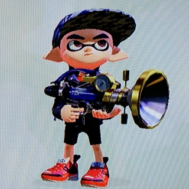
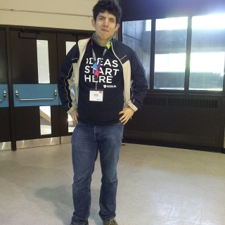
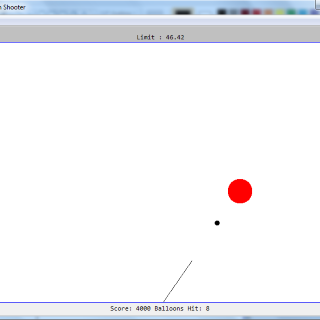
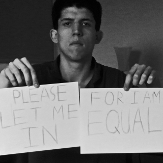
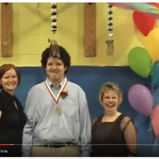
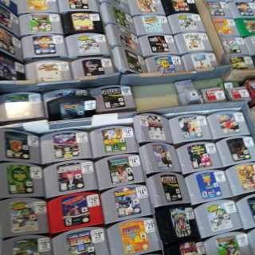
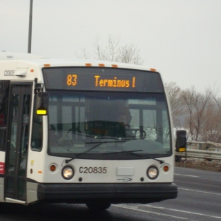

Read My Blogs!

Splatoon for Perseverance? Oh, it's my New Years' Resolution!
Reflecting on 2015, I used Nintendo's
Splatoon
as a means to persevere and make me get what I wanted for so long.

My UWaterloo Demonstration to accept Autism
This was an assignment done in Fall 2015 with the use of rhetorics in technical communication.

Java Program: Circle Cannon Shooter
This was an exercise I did back at college where I was using a combination of event listeners and timing.

The Mentally Handicapped Stranger
A short story I wrote back in 2013 while I was finishing up my full edition of an e-book called "The Asperger Computer."

Elementary School Graduation Message
This was a message delivered by the principal of Boucherville Elementary School when I was graduated in June 2006.

List of N64 Games Played
This is a list of all the N64 games I've played when I was a child. I was pretty much muzzled into them at the time.

Longueuil RTL #83
A short story I did in Secondary 5 at high school where I was so frantic into that one little detail on city buses.